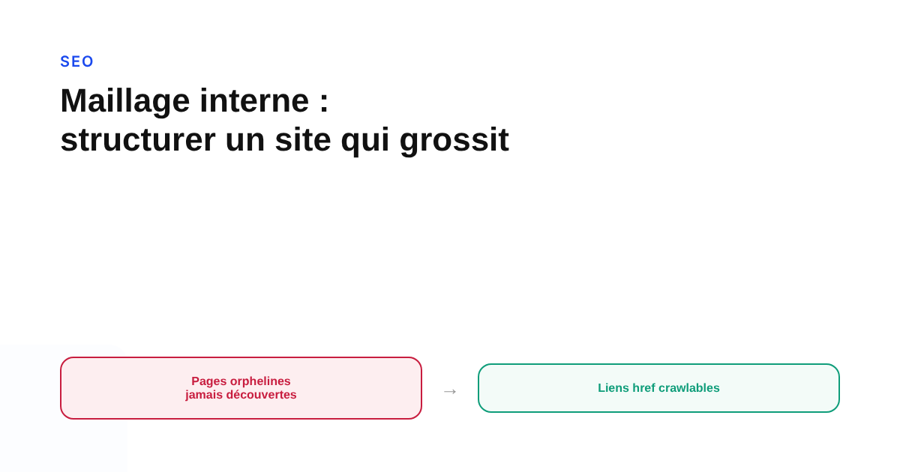
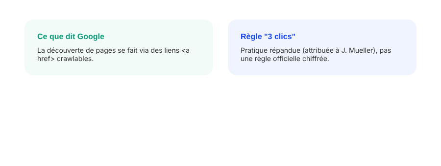

Maillage interne : la méthode pour structurer les liens internes d'un site qui grossit
Un site qui grossit accumule souvent des pages que plus personne ne relie depuis le reste du contenu. Google le dit sans détour : ses robots découvrent les pages par les liens. Voici la méthode pour auditer et restructurer un maillage interne qui a cessé de suivre la croissance du site.

Un site qui double de taille en deux ans garde rarement le même maillage interne qu'à son lancement. Des rubriques s'ajoutent, d'anciennes pages tombent dans l'oubli, des contenus se retrouvent reliés uniquement depuis une page elle-même difficile à atteindre. Google est explicite sur ce point dans sa documentation : ses robots trouvent les nouvelles pages en suivant les liens HTML standards comportant un attribut href. Pas de magie, pas de détection automatique du contenu — juste des liens à suivre.
Pourquoi le maillage interne compte plus qu'on ne le pense
Chaque page importante du site devrait recevoir un lien depuis au moins une autre page : c'est la recommandation de base que donne Google lui-même. Une page qui ne reçoit aucun lien interne — ce qu'on appelle une page orpheline — reste beaucoup plus difficile à découvrir, même si elle figure dans le sitemap XML. Le sitemap aide Google à la trouver, mais une page sans lien interne a tendance à recevoir moins de valeur de classement qu'une page bien intégrée au maillage, et les robots de Google ne cliquent pas sur les boutons « voir plus » en JavaScript : un lien doit exister dans le HTML pour être suivi de façon fiable.
Les symptômes d'un maillage qui a mal vieilli
Un site qui grossit organiquement accumule des schémas prévisibles : des pages créées pour une campagne ponctuelle et jamais reliées depuis la navigation permanente, des catégories renommées qui laissent d'anciennes pages filles sans lien entrant à jour, des contenus de blog anciens qui ne sont plus cités par aucun article plus récent. Le symptôme le plus visible dans Search Console : des URL classées « Découverte — actuellement non indexée », un statut que Google associe explicitement à un signal de priorité insuffisant dans le crawl, souvent lié à un maillage interne trop faible autour de ces pages.

La méthode d'audit, étape par étape
Un crawl complet du site (via un outil comme Screaming Frog ou équivalent) permet de lister les pages qui ne reçoivent aucun lien interne détecté — les candidates orphelines. Pour chaque page jugée stratégique, il s'agit ensuite de vérifier le nombre de clics qui séparent la page d'accueil de cette page : plus ce nombre est élevé, moins la page reçoit de liens internes sur son chemin. La pratique largement recommandée par les praticiens SEO, et évoquée publiquement par John Mueller de Google dans plusieurs échanges, consiste à garder les pages à forte valeur à 2 ou 3 clics maximum de la page d'accueil — une recommandation de bon sens plutôt qu'une règle chiffrée officiellement documentée.
Reconstruire des liens qui ont du sens
La correction ne consiste pas à ajouter des liens au hasard. Un article de blog récent qui traite un sujet voisin d'un article plus ancien devrait le citer explicitement, avec une ancre de lien descriptive : Google utilise le texte d'ancrage pour comprendre de quoi parle la page cible, à la fois pour les utilisateurs et pour l'indexation. Les pages piliers (services, guides complets) gagnent à centraliser les liens vers les contenus plus spécifiques qui s'y rattachent, et réciproquement — une structure en cocon, où chaque page de détail renvoie vers sa page pilier et vice-versa, limite mécaniquement le risque de pages orphelines au fil du temps.
Ce qui ne doit jamais être négligé : le lien vers l'URL canonique
Un piège fréquent quand un site a été restructuré plusieurs fois : des liens internes qui continuent de pointer vers une ancienne URL redirigée, plutôt que directement vers l'URL finale. Google recommande explicitement de lier en interne vers l'URL canonique, pas vers une version qui redirige — chaque redirection traversée ralentit légèrement le crawl et dilue le signal. Un audit de maillage interne gagne donc à inclure une vérification simple : aucun lien interne ne devrait pointer vers une URL qui renvoie autre chose qu'un code 200.
FAQ
Comment Google découvre-t-il une nouvelle page sur un site ?
Principalement par les liens. Google l'indique explicitement dans sa documentation : ses robots suivent les liens HTML standards comportant un attribut href pour trouver de nouvelles pages. Une page sans aucun lien entrant depuis le reste du site (page orpheline) est beaucoup plus difficile à découvrir, même si elle figure dans le sitemap.
Un lien dans un sitemap XML suffit-il, sans lien interne depuis une autre page ?
Le sitemap aide à la découverte, mais une page qui n'est reliée par aucun lien interne reçoit généralement moins de valeur de classement qu'une page bien intégrée au maillage, même si elle finit par être indexée.
Faut-il garder toutes les pages importantes à 2-3 clics de la page d'accueil ?
C'est une recommandation largement répandue chez les praticiens SEO, y compris attribuée à John Mueller de Google dans plusieurs échanges publics, mais ce n'est pas une règle chiffrée documentée officiellement par Google. L'idée reste solide : plus un contenu est profondément enfoui dans l'arborescence, moins il reçoit de liens internes et plus il devient difficile à découvrir et à classer.
Envie d'un audit de maillage interne avant que les pages orphelines ne s'accumulent ?
Pour aller plus loin, voir la page SEO, et l'article Structurer un site qui se positionne avec les cocons sémantiques.
Pour continuer sur ce sujet.